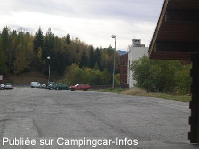
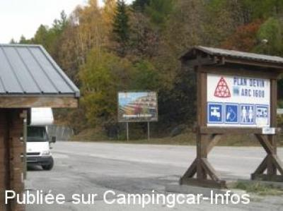

ASN = Aire de services avec stationnement nuit possible de :
BOURG SAINT MAURICE Les Arcs 1600
(N° 204)
Accès/adresse :
D120
Arc 1600
73700 BOURG SAINT MAURICE
Arc 1600
73700 BOURG SAINT MAURICE
Latitude : (Nord) 45.5955° Décimaux ou 45° 35′ 43′′
Longitude : (Est) 6.79075° Décimaux ou 6° 47′ 26′′
Tarif : Gratuit
Services :


Tous commerces
Autres informations :
Ouvert toute l'année, à 1590 m d'altitude
Parking empierré, éclairé, en pente, .
Tel : +33 (0) 479 078 577
http://www.lesarcs.com

Le 31/10/2004 par Fama80

Le 31/10/2004 par Fama80
de
Xtian74
le 26/06/2010 :
La borne a purement et simplement été enlevée ! Il reste possible de stationner sur ce parking mal nivelé, en pente et au bord de la route, il faut avoir envie ... Reste à souhaiter que la station réinstalle une borne neuve (on peut rêver!).
La borne a purement et simplement été enlevée ! Il reste possible de stationner sur ce parking mal nivelé, en pente et au bord de la route, il faut avoir envie ... Reste à souhaiter que la station réinstalle une borne neuve (on peut rêver!).
de
Steph38
le 26/07/2008 :
Les services sont toujour HS
Les services sont toujour HS
de
Franck Perrier
le 02/08/2006 :
En juillet 2006, il est toujours possible de stationner, mais aucun service ne fonctionne, impossible de faire les vidanges
En juillet 2006, il est toujours possible de stationner, mais aucun service ne fonctionne, impossible de faire les vidanges